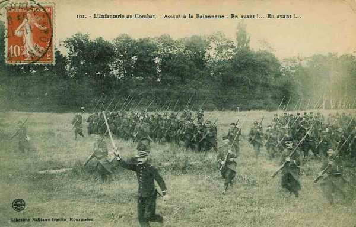
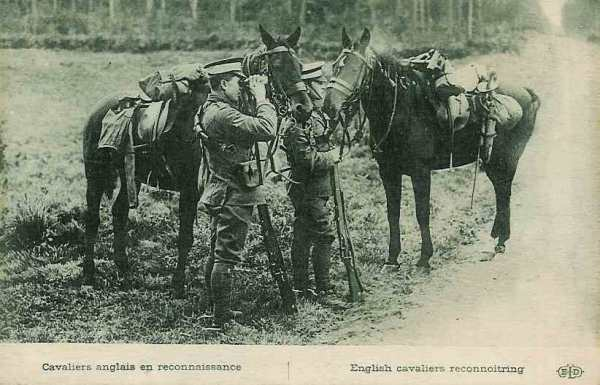

Le 22 août 1914
Pendant que les Ie et IIe armées françaises doivent retraiter devant celle de Rupprecht de Bavière, l’armée allemande remporte des victoires sur tout le front : dans les Ardennes (batailles de Longwy et de Neufchâteau) et dans l’Entre Sambre et Meuse (bataille de Charleroi). Le plan XVII est entièrement mis en échec.
G.Q.G. français
Joffre apprend qu’au sud de la Sambre, le centre de la Ve armée française est aux prises avec celui de la IIe armée allemande (3 C.A. allemands contre deux français). Il estime que le C.C. Sordet ne s’emploie que médiocrement contre la cavalerie allemande signalée au nord de Mons. Il fait connaître son étonnement à Lanrezac sous les ordres duquel le C.C. est placé. Pour protéger la région de Lille, Tourcoing contre la cavalerie allemande, Joffre demande au ministre de mettre une quatrième division territoriale à la disposition de général d’Amade.
Le G.Q.G. apprend que les forces russes forment 10 armées dont 7 dirigées contre l’Allemagne et l’Autriche, soit un total de 28 C.A. représentant 1.120.000 hommes. En Prusse orientale, les troupes russes ont dépassé la frontière d’une trentaine de km.

Armée d’Alsace
La retraite de la IIe armée après la bataille de Morhange entraîne le retrait de toute la droite du dispositif français, dont l’armée d’Alsace.
Celle-ci est disloquée et répartie sur d’autres théâtres d’opérations. La ligne de résistance se situe aux contreforts des Vosges et l’armée s’installe solidement à l’Hartmannwillerkopf (Vieil Armand). Suite à ce retrait, la partie encore sous contrôle français du territoire alsacien se limite à Thann, Massevaux et les hautes vallées de la Thur et de la Doller.
Ie armée française
La gauche de l’armée est attaquée dans la matinée et s’est repliée dans la forêt de Mondon et sur la Meurthe. Le front à tenir est fixé par Dubail :
 Pour les 21e et 14e C.A. : Baccarat - Badonviller - Allarmont Col de Hans - Sainte-Marie.
Pour les 21e et 14e C.A. : Baccarat - Badonviller - Allarmont Col de Hans - Sainte-Marie.
Pour les 8e et 13e : région de Rambervillers.
IIe armée française
Castelnau a replié son armée le long d’une forte position dans la région de Nancy, qu’il fait fortifier par des ouvrages de campagne.
Ordre lui est donné par Joffre de tenir le temps nécessaire au développement de la manuvre dans le nord. Sur le front de Lorraine, il ne s’est produit dans la région du Grand-Couronné que des incidents de cavalerie.
IIIe armée française : bataille de Longwy
L’armée a rencontré la Ve armée allemande (bataille de Virton et de Longwy) en début de journée et, au prix de pertes assez sérieuses, s’est établie sur le front passant entre Joppecourt et Virton.
IVe armée française : bataille des Ardennes
La IVe armée est en ligne avec six C.A. et demi :
2e C.A. vers Meix - Tintigny.
Corps colonial vers Rossignol.
12e C.A. vers Neufchâteau.
17e C.A. vers Ochamps.
11e C.A. vers Maissin.
9e C.A. forme l’aile gauche.
Plusieurs affrontements ont lieu :
Le corps colonial subit un désastre à Rossignol (la 3e division coloniale est encerclée et anéantie).
Le 17e C.A. est en retraite, après qu’une de ses divisions ait été écrasée au bois de Luchy par le 18e C.A. allemand.
Le 2e C.A. se fait battre à Meix-devant-Virton par le 5e C.A. allemand.
Le soir, de Langle reporte son armée sur la ligne Paliseul - Florenville - Meix.
Ve armée française : bataille de Charleroi
En fin de journée, la Ve armée s’est repliée en fin de journée sur le front Saint-Gérard - Biesme (10e C.A.), Gerpinnes - Nalinnes (3e C.A.), Gozée - Thuin (18e C.A.). Les 53e et 69e D.R. sont arrivées à mi-chemin entre Avesnes et Beaumont. La 51e division de réserve a fini de relever sur la Meuse le 1e C.A., qui se rassemble au nord-est de Saint-Gérard.

Armée anglaise
Voici la position des unités anglaises :
2e C.A. à Mons et Saint-Ghislain.
1e C.A. le long de la route de Mons à Beaumont jusqu’à Grand Reng.
5e brigade de cavalerie à Binche.
19e brigade d’infanterie attendue à Valenciennes.
Le reste de la cavalerie est à Audregnies derrière l’aile gauche.
Joffre avait proposé à French une offensive vers Nivelles, mais, comme Lanrezac s’était replié sur la ligne Thuin - Saint-Gérard après la bataille de Charleroi, il n’est plus question pour les Anglais de prendre l’offensive. French promet toutefois de maintenir ses positions pendant 24 heures.
A l’aube de ce jour, l’escadron C du 4e Dragon Guards (2e brigade de cavalerie) envoie deux reconnaissances d’officiers d’Obourg en direction de Soignies. L’une d’elles trouve un piquet allemand, ouvre le feu et le chasse. Plus tard, une fraction du même escadron s’avance à la rencontre d’un parti de cavalerie allemande sur la route de Soignies à Mons et le trouve près de Casteau. L’escadron tue trois ou quatre Allemands et fait prisonniers trois autres (4e cuirassiers de la 9e D.C.). Ce sont les premiers coups de feu tirés par l’armée britannique sur le Continent depuis la bataille de Waterloo.

Une plaque commémorative apposée le long de la route à Casteau le rappellera. La 3e brigade de cavalerie ne rencontre aucun ennemi dans le triangle Gottignies - Le Roeulx - Houdeng.
Vers 10h, un détachement allemand arrive au contact de deux escadrons de Scots Greys (5e brigade de cavalerie) qui tenaient les ponts de la Samme à Binche et à Péronnes. A 14h, les Greys se retirent lentement. Une troupe du 16e lanciers envoyée en soutien tombe sur un parti de chasseurs sur une hauteur immédiatement à l’ouest de Péronnes.
C’est une rencontre à l’arme blanche entre unités de cavalerie, un type de combat qui va complètement disparaître au cours de la guerre.
La 1e division atteint les emplacements choisis au nord et sud-ouest de Maubeuge. Sir Douglas Haig reçoit l’ordre de faire progresser le 1e C.A. vers le nord pour se lier à la gauche du 18e C.A. français sur la Sambre. Entre 17 et 19h, la 1e division reprend sa marche, les 2e et 3e brigades d’infanterie entrent à Villers-Sire-Nicole et Croix-lez-Rouveroy entre 21h et 22h. La 1e brigade (Guards) n’atteint pas Grand-Reng avant 2 à 3h du matin.
La 3e division atteint Nimy - Ghlin - Frameries - Spiennes vers 13h. La 5e division arrive à Jemappes - Bois de Boussu. La première ligne des avant-postes de la 3e division s’étend de Givry à la lisière de Mons. Dans l’après-midi, la ligne est poussée en avant par Villers-Saint-Ghislain - Saint-Symphorien - le pont d’Obourg - le pont de l’écluse 5 à Nimy.
A gauche de la 3e division, la 13e brigade d’infanterie de la 5e division occupe la ligne du canal de Mariette à Les Herbières et la 14e brigade d’infanterie de Les Herbières à Pommeroeul. Le 2e C.A. occupe un front d’une longueur totale de 36 km.
Le Q.G. de la 3e division ordonne de préparer une seconde position.
La 5e brigade de cavalerie reste vers Estinnes-au-Mont (sud-ouest de Binche), laissant les Scots Greys en position à Estinnes-au-Val.
Recevant des rapports concernant d’importantes forces allemandes se dirigeant vers le sud, John French renonce à attaquer en direction de Soignies. Il blâme Lanrezac qui effectue une retraite alors que lui reste sur ses positions. En effet, le 10e C.A. s’est retiré jusqu’à la ligne Saint-Gérard - Biesme - Gerpinnes. Les Anglais sont à 16 km en avant du front principal français.
La position de résistance de l’armée anglaise sera sur le canal de Mons-Condé et les Anglais tiendront cette ligne pendant 24 h. Il y a un vide de 20 km entre l’armée anglaise et la Ve armée française. Il sera bien entendu utilisé par von Kluck pour essayer de cerner l’armée anglaise par l’est.
Armée belge
Du 22 août au 25 septembre, les Allemands doivent couvrir leurs communications à travers la Belgique et sont obligés de laisser sur leurs arrières une "armée de Belgique", dont l’effectif est strictement calculé pour ne pas affaiblir leur masse de manoeuvre.

L’armée belge est vis-à-vis des forces allemandes dans un rapport de forces permettant de se mesurer avec elles. Elle peut pratiquer de la défensive active et participer, par des sorties, aux grandes batailles que se livrent les armées adverses sur le théâtre principal.
O.H.L.
**Lien vers marche générale des armées allemandes**
{kind=link}
{kind=link}
Moltke vient d’être avisé par le duc de Wurtemberg que les aviateurs de la IVe armée ont repéré de fortes colonnes en marche sur le front Stenay - Montmédy. Au total, les mouvements décelés paraissent comporter six C.A. au moins. Le Kronprinz lui demande d’autre part de pouvoir attaquer. Pour conserver l’alignement entre ses armées dans la manuvre d’ensemble, Moltke considère que si les Français attaquent, la mission de la Ve armée est de se défendre et non d’attaquer. Elle ne doit surtout pas exposer son flanc droit. Cette désapprobation ne dissuade pas le Kronprinz. Il revient à la charge et Moltke finit par céder.
Ie armée allemande
Conformément aux directives données la veille par von Bülow, von Kluck a infléchi la marche de ses colonnes vers le sud. Dans la soirée, les 4e, 3e et 9e C.A. se trouvent respectivement à Silly, Soignies, Mignault. Le 2e C.A. est toujours en échelon à Ninove, le 4e C.A.R. se trouve à Bruxelles. Le 3e C.A.R. est déployé face à Anvers. Ce dernier doit être relevé par le 9e C.A.R. qui se trouve toujours entre Hambourg et Kiel.
Von Kluck apprend que le pays à l’ouest et au nord-ouest est libre mais des partis britanniques sont signalés sur le canal de Condé à Mons ainsi que d’importantes concentrations plus au sud. En revanche, il ignore jusqu’où s’étend le dispositif anglais vers l’ouest. L’on croit, à la Ie armée, que la ligne anglaise s’étend de Maubeuge à Valenciennes, alors que dans la réalité, le gros de l’armée anglaise est autour de Mons.
Von Kluck est persuadé qu’il ne faut plus, si l’on veut déborder l’adversaire, continuer vers le sud, mais faire mouvement vers le sud-ouest. Il se sent bridé par la subordination à von Bülow et ne peut agir suivant l’esprit du plan de campagne. Il prend la décision de passer par-dessus von Bülow et d’en référer directement à l’O.H.L., mais la réponse de l’O.H.L. est négative. Moltke confirme que la Ie armée continuera jusqu’à nouvel ordre à dépendre de la IIe et qu’il approuve pleinement les dispositions de von Bülow. Il ne faut s’étendre à droite qu’après avoir défait l’ennemi.
Il apparaît clairement que Moltke lui-même renonce momentanément à écraser l’adversaire sur le flanc. De dérogation en dérogation, il s’écarte de ses instructions du 17 août. Comment l’expliquer ? La seule explication plausible est que Moltke, enivré par les succès continuels de l’armée depuis le début de la campagne, a acquis la conviction que l’armée allemande est tellement supérieure à ses adversaires que toute manuvre est superflue. Il suffit de courir sus à l’ennemi partout où on le rencontrera pour le disperser ou le détruire.
Les ordres donnés à 9h30 au soir sont de faire mouvement sur une ligne Jemappes - Gramont.
Le Q.G. de l’armée est à Soignies.
IIe armée allemande : bataille de Charleroi
**Lien vers carte région Charleroi - Namur** C Michelin, d’après carte n°4, édition 112-3741 - autorisation n° 05-B-18
{kind=link}
A 10h45, von Bülow donne l’ordre à la IIe armée d’atteindre la ligne Binche - Mettet.
Dans l’après-midi, le 2e D.I. de la Garde et le 10e C.A. débouchent des fonds de la Sambre. D’abord arrêtés par l’artillerie française, ils progressent bientôt en refoulant l’infanterie. La Garde avance jusqu’à Fosse et Vitrival. Le 10e C.A. parvient également à atteindre le plateau au sud de la Sambre.
Von Emmich (10e C.A.) fait occuper les ponts de Tamines et de Roselies.
Von Bülow veut s’assurer le concours immédiat de la IIIe armée et télégraphie à von Hausen « Prière instante IIIe armée d’intervenir rapidement aile droite sur Mettet. Forces ennemies au sud de la Sambre paraissent ne comprendre jusqu’ici que trois divisions de cavalerie et faibles éléments d’infanterie. IIe armée continue mouvement jusque ligne Binche - Mettet ».
En fin de journée, von Bülow a une large tête de pont aux alentours de Charleroi dont la profondeur atteint 5 à 6 km. Ses ailes sont encore au nord de la Sambre.
Le soir, il arrête la date de l’attaque au 23 et télégraphie à von Hausen « attaque IIe armée sur Sambre aura lieu 23 août au matin ; aile gauche par Jemeppe - Mettet. »
En même temps partent les ordres pour les Ie et IIe armées.
« La IIe armée gagnera le 22 août la ligne Binche - Fontaine-l’Evêque, rive nord de la Sambre, et franchira la Sambre dans la matinée du 23 afin de faciliter à la IIIe armée le passage de la Meuse.
La Ie armée, tout en se gardant vers Anvers, et en assurant l’occupation de Bruxelles, se conformera à ce mouvement de manière à être en mesure d’investir les fronts nord et nord-est de Maubeuge et d’agir par l’ouest de cette place pour soutenir la IIe armée ».
C’est le 22 août qu’a lieu la fusillade à Tamines de 383 civils.
IIIe armée allemande
L’armée qui doit attaquer le 23 se prépare pour l’assaut. Le 12e C.A. fait face à Dinant, le 19e C.A. se rapproche de la Meuse et le 12e C.A.R. a atteint Sovet avec la 23e division de réserve ; la 24e division de réserve se trouve à Natoye.
Tous les C.A. ont déployé leur artillerie sur les hauteurs de la rive droite de la Meuse et le 19e C.A. jette un pont de bateaux près de Waulsort pendant la nuit.
IVe armée allemande
A 2h du matin, le duc de Wurtemberg est avisé du mouvement de la Ve armée qu’il juge imprudent. Il décide sur-le-champ que le 6e C.A. flanquera le 5e en se portant à Tintigny et que le 18e C.A.R. prendra ses dispositions à Neufchâteau pour marcher aussi, le cas échéant, vers le sud-ouest, les 18e et 8e C.A. prendront position à hauteur de Libramont - Anloy et de Wellin - Lomprez. Le 8e marchera de Bastogne vers Saint-Hubert.
Ordre est donné aux troupes de se retrancher.

Sitôt la décision prise par le duc de Wurtemberg de soutenir le 5e C.A., l’alarme est donnée au 6e C.A. A 5h30, la 12e division se met en route de L’Eglise vers Rossignol, la 11e de Thibésart sur Tintigny. Deux heures plus tard, la division de droite se heurte aux Français en pleine forêt.
Ve armée allemande
Les cinq C.A. de la Ve armée se portent à la rencontre des Français de part et d’autre de Longwy, vers le sud-ouest, pour les rejeter au-delà de la Chiers et de la Crusnes, sur un front de 40 km.
Seul le C.A. de droite marche en direction du sud, traversant la forêt au nord de Virton.
Le 13e C.A., par la clairière de Virton, marche vers la Chiers
Le 6e C.A.R. par le sud de Longwy se dirige vers la Crusnes.
Le 16e C.A. marche sur Fillières - Mercy-le-Haut -
Audun-le-Roman.
Le rabattement de l’armée vers le sud entraîne une déviation de proche en proche. La IVe armée est entraînée dans la bataille. Les IVe et Ve armées vont remporter une victoire ordinaire car dès le début de leur poursuite, les réactions françaises vont faire disparaître l’illusion d’un succès décisif.
VIe armée allemande
L’offensive se poursuit. Les Bavarois enlèvent la ligne d’avant-postes des 15e et 16e C.A. d’Einville à Lunéville, mais ils échouent contre les hauteurs de Flainval tenues par la 11e division.
VIIe armée allemande
Le 21e C.A. s’empare de Lunéville puis passe la Meurthe.